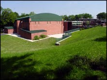

|  | This project consisted of multiple additions to an existing 1950’s vintage, school building. The main addition was a two story classroom wing. The computer room within the new addition wwas designed to allow multi-media presentations and remote interactive learning sessions. The project also included renovations through out the existing building including Art rooms, 2 Science Labs, a Choral Room, and Toilet facilities. Infrastructure upgrades included new electrical service and air conditioning to pre-specified areas. |